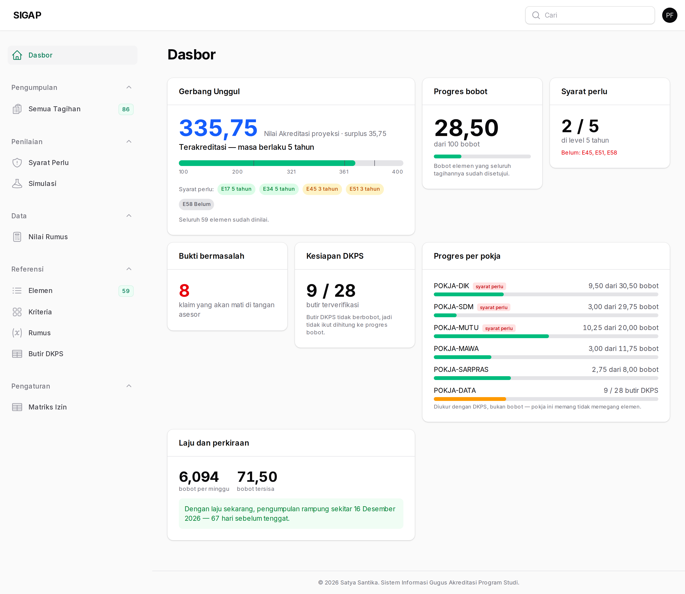
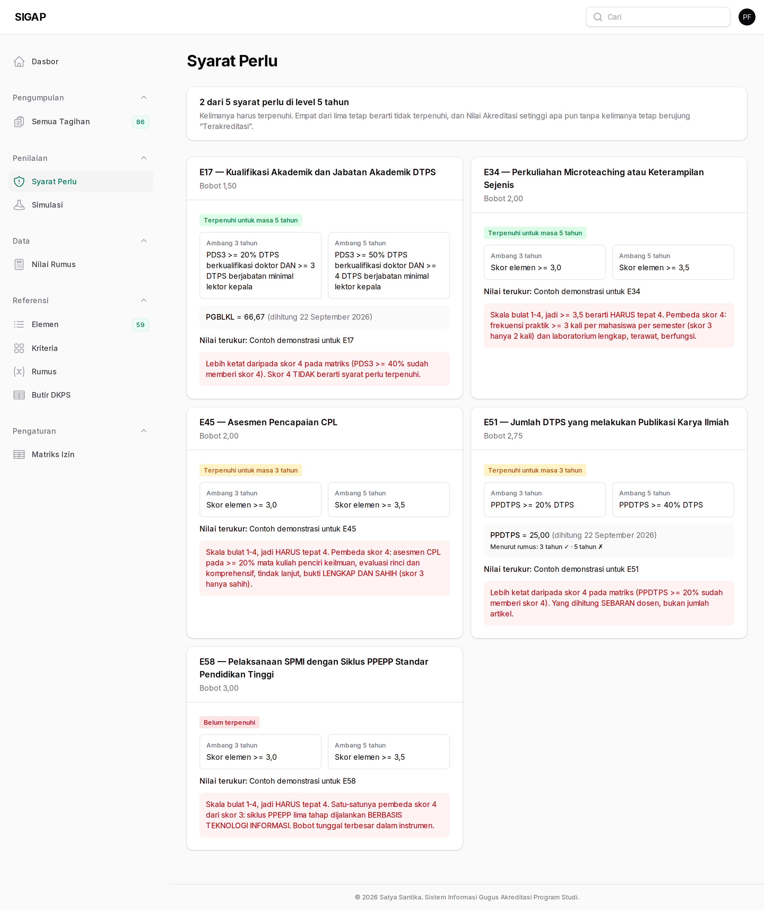
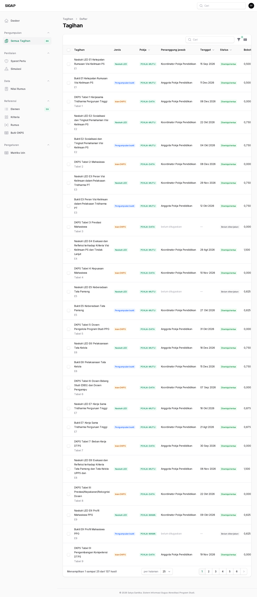
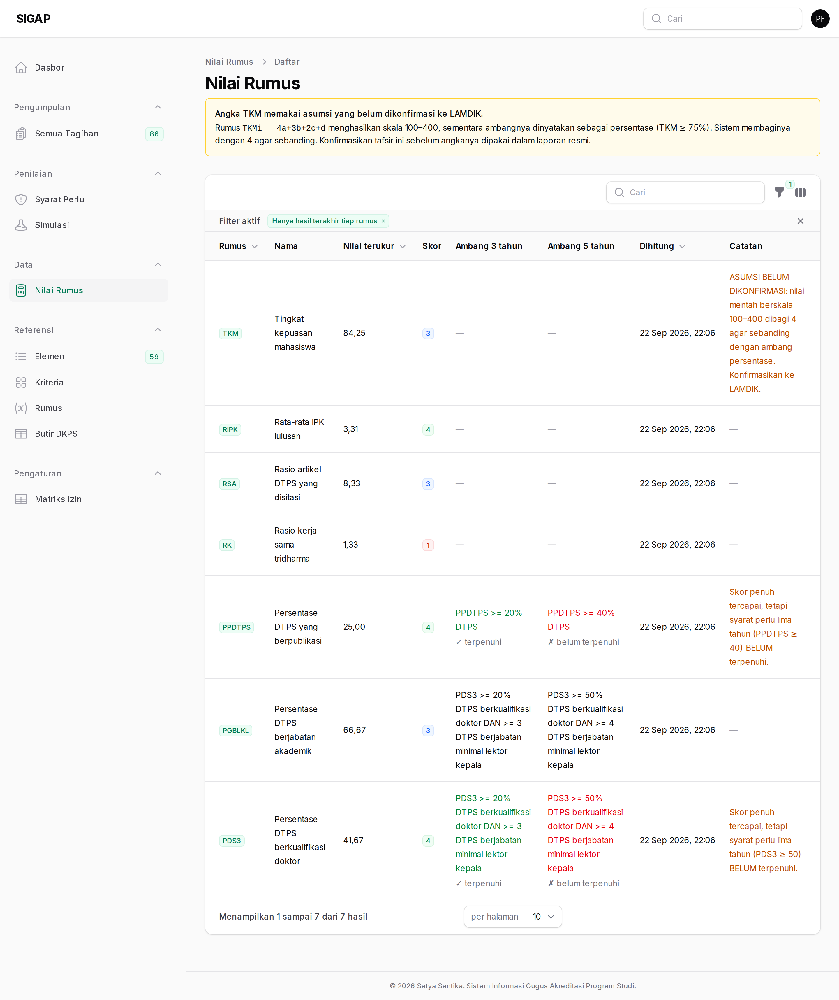
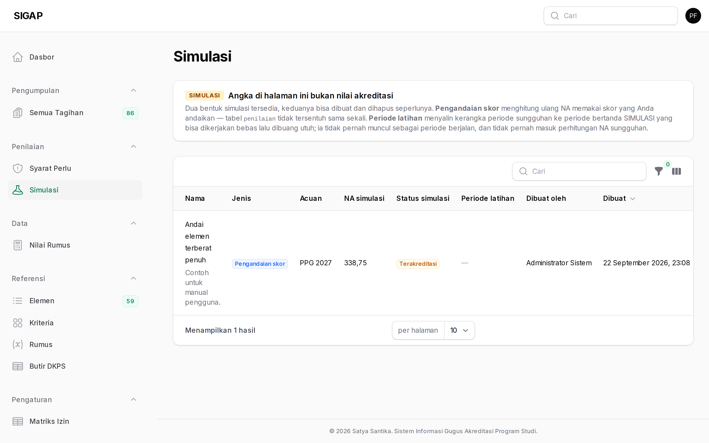

Peran pimpinan dirancang untuk memantau, bukan mengerjakan. Anda melihat seluruh angka dan seluruh tagihan, dan Anda bisa menulis komentar — tetapi Anda tidak menyetujui tagihan, tidak menulis narasi, dan tidak mengunggah bukti.
Pembatasan ini bukan soal kepercayaan melainkan soal kejelasan: bila pimpinan ikut menyetujui, tidak ada lagi lapisan yang memeriksa keputusan ketua. Karena itu menu Anda pendek — hanya layar yang memang urusan pimpinan yang muncul.
Dasbor
Satu layar yang menjawab pertanyaan yang biasanya ditanyakan pimpinan: di mana posisi kita, apa yang menahan, dan kapan kira-kira selesai.
Bacalah Gerbang Unggul lebih dulu, bukan Progres bobot. Progres yang tinggi tidak berarti apa pun bila salah satu syarat perlu masih merah.

Syarat perlu
Lima baris yang menentukan status akhir. Bila ada yang masih belum, di sinilah perhatian pimpinan paling berguna — biasanya yang dibutuhkan bukan tenaga tambahan melainkan keputusan di tingkat fakultas.

Semua tagihan
137 tagihan beserta status dan tenggatnya. Hanya-baca bagi pimpinan: menugaskan dan menyetujui adalah urusan ketua dan koordinator.
Kolom yang paling berguna bagi pimpinan adalah tenggat dan bobot — tagihan terlambat yang berbobot besar jauh lebih mendesak daripada sepuluh tagihan ringan yang juga terlambat.

Nilai rumus
Tujuh rumus LAMDIK beserta hasilnya. Angka di sini datang dari isian DKPS, jadi rumus yang hasilnya mengejutkan biasanya menandakan isian DKPS yang belum lengkap, bukan kinerja yang buruk.

Simulasi
Hasil simulasi bisa Anda baca untuk menimbang keputusan — misalnya apakah menaikkan satu elemen berbobot besar lebih berdampak daripada menaikkan tiga elemen kecil.
Angka di halaman ini bercampur pengandaian dan bukan nilai akreditasi. Jangan mengutipnya keluar tanpa lencana SIMULASI-nya.
